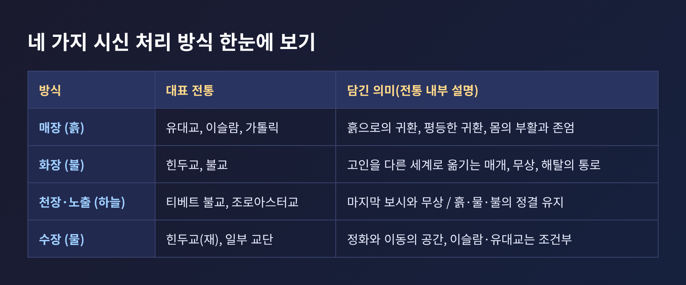
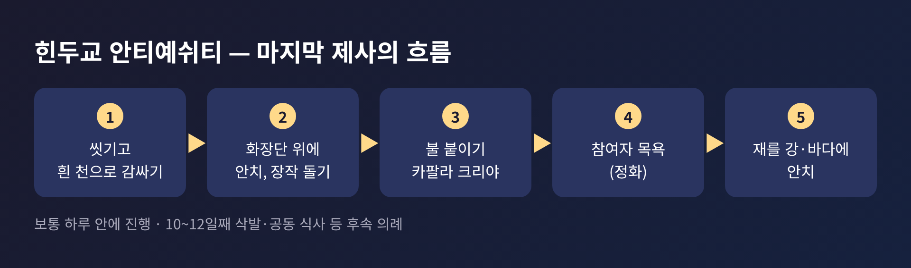
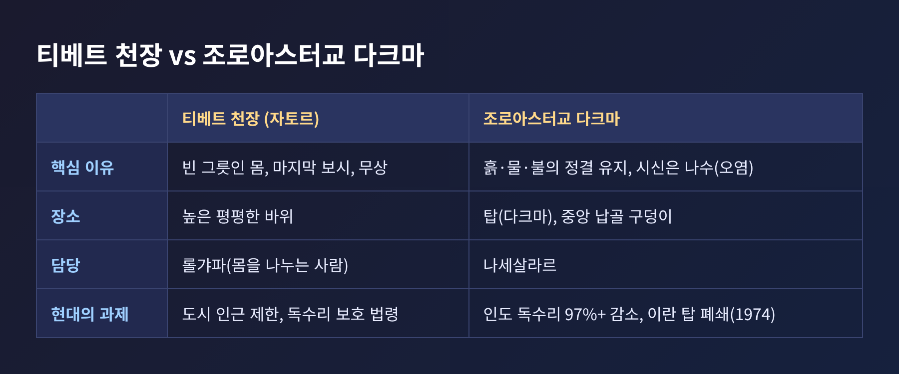
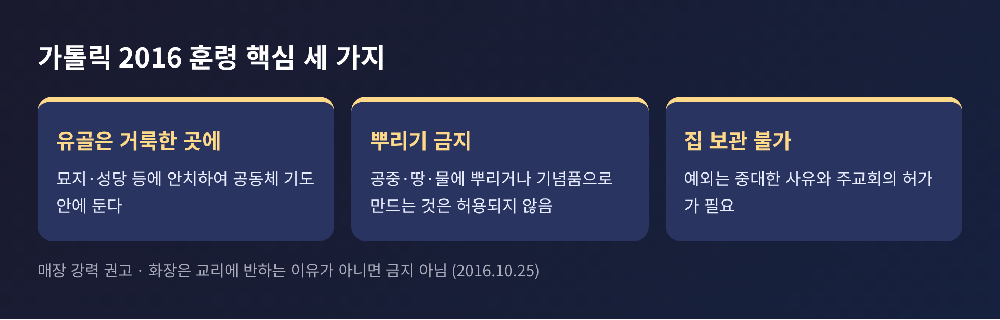
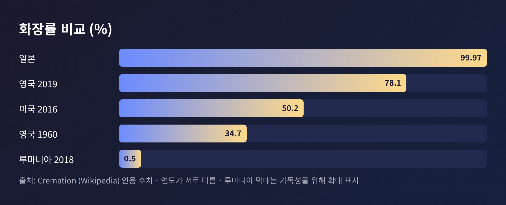

장례 의례 비교 — 매장·화장·천장·수장은 죽음을 어떻게 이해했을까

세 줄 요약
- 시신을 어떻게 돌려보내느냐는 그 전통이 몸과 죽음을 어떻게 이해하는지 압축해서 보여줍니다.
- 유대교·이슬람은 흙, 힌두교는 불과 강, 티베트 불교는 하늘, 조로아스터교는 정결을 지키는 노출로 설명됩니다.
- 같은 종교 안에서도 교단과 시대에 따라 입장이 갈립니다. 이 글은 비교를 위한 교양 정리입니다.
오늘은 장례 의례를 비교종교학의 눈으로 읽어 보려 합니다. 매장, 화장, 천장, 수장이라는 시신 처리 방식에 각 전통이 어떤 죽음 이해를 담았는지 살펴보겠습니다. 어느 쪽이 옳은지를 가리는 글이 아니라, 각 전통이 스스로 내놓는 설명을 나란히 놓아 보는 글입니다.
■ 장례는 왜 종교마다 이렇게 다를까
죽음 앞에서 인간이 해야 하는 일은 어느 문화에서나 같습니다. 시신을 어딘가로 보내야 하고, 남은 사람들은 슬픔을 정리해야 합니다.
방법은 크게 네 갈래로 나뉩니다. 흙에 묻는 매장, 불에 태우는 화장, 새와 바람에 맡기는 노출(천장·조장), 물에 보내는 수장입니다. 화장의 역사는 매우 깁니다. 호주 멍고 호수에서 발견된 '멍고 레이디'의 유해는 약 1만 7천 년 전 화장의 흔적으로 소개됩니다. 청동기 시대 유럽과 고대 그리스·로마에서도 화장은 흔했습니다.
중요한 점은 방법 그 자체보다 방법에 붙은 이유입니다. 같은 불을 써도 한쪽은 정화로, 다른 쪽은 해탈의 통로로 설명합니다. 같은 땅을 써도 한쪽은 부활을 기다리는 자리로, 다른 쪽은 평등한 귀환으로 설명합니다.

■ 흙으로 돌려보내기 — 유대교와 이슬람
유대교의 전통 규범인 할라카는 화장을 금하고, 땅에 묻는 일을 종교적 의무로 봅니다. 정통·하레디·하시디 계열은 금지하며, 개혁 유대교는 허용하되 매장을 선호합니다. 교파마다 온도 차가 있는 셈입니다.
장례의 절차는 몸에 대한 존중으로 채워져 있습니다. 헤브라 카디샤라 불리는 장례 공동체가 시신을 물로 정화하는 타하라를 맡고, '쇼메림'이라 불리는 지킴이가 사망 때부터 매장 때까지 곁을 지키며 시편을 읽습니다. 관은 칠하지 않은 소박한 나무로 만들고 금속을 쓰지 않으며, 나무못으로 결합합니다. 창세기 3장 19절의 '흙으로 돌아간다'는 구절이 그 이유로 인용됩니다. 몸이 흙으로 돌아가는 과정을 늦추지 않겠다는 뜻입니다.
이후에는 애도가 단계로 이어집니다. 매장일부터 7일의 시바, 30일의 쉴로쉼이 있고, 부모상이라면 11개월 동안 카디시를 낭송합니다. 성묘 때 무덤에 작은 돌을 올리는 관습도 여기서 나왔습니다.
이슬람의 장례는 신속함과 평등이 두드러집니다. 가능하면 24시간 이내에 묻습니다. 같은 성별의 사람이 시신을 씻기는 구슬을 행하고, 흰 면포 카판으로 쌉니다. 남성은 세 겹, 여성은 다섯 겹입니다. 신분과 재산이 무엇이든 같은 천을 두른다는 점에서 '누구나 같이 묻힌다'는 원리를 보여 준다고 설명됩니다.
이어 공동체 의무로 자나자 예배를 올립니다. 이 예배에는 절하는 동작이 없고, 고인을 위한 기도만 담습니다. 무덤은 메카 방향(키블라)에 직각으로 파고, 시신은 오른쪽으로 눕혀 그 방향을 향하게 합니다. 무슬림 다수 지역에서는 관을 쓰지 않는 경우가 많습니다. 화장은 대다수가 금지로 이해합니다.
두 전통은 닮은 듯 다릅니다. 유대교는 흙으로의 귀환과 애도의 단계를, 이슬람은 신속한 매장과 평등을 전면에 둡니다. 다만 둘 모두 몸을 훼손하지 않고 땅에 맡긴다는 점에서 만납니다.
■ 불로 보내기 — 힌두교와 불교
힌두교에서 장례는 '안티예쉬티', 곧 '마지막 제사'로 불립니다. 삶의 통과의례 가운데 마지막이라는 뜻입니다. 리그베다 10.16은 불의 신 아그니에게 몸을 태우지 말고 조상들에게 보내 달라고 청합니다. 불은 몸을 없애는 도구라기보다 고인을 다른 세계로 옮기는 매개로 그려집니다.
절차는 구체적입니다. 하루 안에 진행하는 것이 보통입니다. 장남이나 가까운 남성 친족이 화장단을 돌며 참깨와 쌀을 입에 넣고 정제버터를 붓습니다. 물항아리를 어깨 너머로 던져 깨뜨리기도 합니다. 불이 오르면 대나무 막대로 두개골을 찌르는 '카팔라 크리야'를 행합니다. 영혼을 풀어 주는 동작으로 설명됩니다. 의례를 마친 이들은 곧 목욕해 죽음의 부정을 씻어 냅니다.
재는 강이나 바다에 안치합니다. 하리드와르, 프라야그라지, 바라나시 같은 성지가 이름 높습니다. 갠지스 강변 바라나시의 마니카르니카 가트는 가장 성스러운 화장터 가운데 하나로 알려져 있고, 이곳의 화장이 윤회에서 벗어나는 모크샤로 이끈다고 믿어 왔습니다. 5세기 굽타 시대 비문에도 이름이 보일 만큼 오래된 장소입니다.
예외도 있습니다. 어린 아이는 보통 매장하고, 일부 종파의 구루나 사두는 앉은 자세로 묻은 뒤 그 위에 사마디를 세웁니다. 불이 곧 모든 죽음의 답은 아닌 셈입니다.
불교는 지역에 따라 방식이 다양합니다. 공통된 바탕은 죽음이 윤회 속 다음 존재로 건너가는 시작이며, 살아 있는 이에게는 무상을 일깨운다는 이해입니다. 중국의 대승 전통은 사후 49일 동안 아미타경과 아미타불의 이름을 염송하며 의례를 올립니다. 훌륭한 스승은 화장해 유골을 사리로 모시고 탑에 안치하는 일이 많았습니다. 다만 노천에 두는 방식, 숲이나 동굴에 두는 방식도 역사 기록에 보입니다. 일부 승려가 앉은 채로 묻혔다가 약 3년 뒤 꺼내졌다는 '육신보살'의 사례도 있습니다.

■ 하늘에 맡기기 — 티베트 불교의 천장
티베트의 천장(자토르)은 흔히 충격적으로 소개되지만, 그 안에는 정리된 설명이 있습니다. 의식은 보통 새벽에 시작됩니다. 높고 평평한 바위 위에서 승려가 진언을 외고 노간주 향을 피웁니다. '롤갸파', 곧 몸을 나누는 사람이 시신을 해체해 독수리에게 내어 줍니다. 남은 뼈는 빻아 보릿가루 짬파와 섞어 까마귀와 매에게 줍니다.
여기에는 세 가지 설명이 겹칩니다. 첫째, 금강승 불교는 영혼이 몸을 떠나 윤회한다고 가르치므로, 몸은 빈 그릇이라 보존할 이유가 없다고 봅니다. 둘째, 마지막으로 다른 생명을 먹이는 보시이며 자비의 실천입니다. 셋째, 삶이 무상하다는 가르침을 눈앞에서 보여 주는 장면입니다.
현실적인 조건도 함께 작용했습니다. 땅이 바위투성이이고 영구동토에 가깝다는 점, 대부분 수목한계선 위라 땔감이 귀하다는 점입니다. 화장은 주로 고승에게 한정되었습니다.
여기서 하나 짚어 둘 것이 있습니다. 천장을 '하늘과 하나가 되는 의식'으로 설명하는 글이 많습니다. 그러나 해설과 목격담은 대체로 생명이 이미 떠난 뒤의 몸을 다루는 일이라고 전합니다. 낭만적인 이미지와 전통 내부의 설명은 다를 수 있다는 뜻입니다. 독수리가 오지 않거나 시신이 많이 남으면 업이 좋지 않다는 징조로 보는 시선도 있어, 이 의식이 순수한 정서만으로 이루어지지 않음을 알 수 있습니다.
기원은 확실하지 않습니다. 11~12세기 단파상게와 관련된 '쬐' 수행에서 왔다는 설도, 조로아스터교의 살 발라내기 관습에서 영향을 받았다는 설도 있습니다. 문화대혁명기에는 '낡은 것'으로 금지되었고, 이후 농촌에서 이어져 현재는 공식 보호를 받지만 도시 근처에서는 제한됩니다. 독수리가 보호종으로 지정된 법령, 전염병 사망자를 제외하는 지방 규정도 있습니다.
■ 정결을 지키며 맡기기 — 조로아스터교
조로아스터교의 논리는 또 다릅니다. 흙, 물, 불은 신성한 요소이므로 시신으로 더럽혀서는 안 된다고 봅니다. 그래서 묻지도 태우지도 않습니다. 시신은 '나수'라 불리는 오염으로 여겨지고, 시체 악마 나수가 닿는 것을 오염시킨다고 믿었습니다.
그 해법이 '다크마', 이른바 침묵의 탑입니다. 시신을 탑 위에 놓아 햇볕과 독수리에 맡깁니다. 뼈는 중앙의 구덩이에 모이고, 햇볕과 바람에 바래는 데 최대 1년이 걸립니다. 이후 석회와 함께 분해되고, 숯과 모래 필터를 거쳐 바다로 흘러갑니다. 남성은 바깥 고리, 여성은 중간, 어린이는 가장 안쪽에 놓으며, 시신을 다루는 '나세살라르'만 출입할 수 있습니다.
천장과 모양은 비슷해도 이유는 다릅니다. 티베트 불교가 '베풂'과 '무상'에 무게를 둔다면, 조로아스터교는 '자연의 순수 유지'와 '오염 차단'을 중심에 둡니다.

그리고 현대에 큰 난관이 닥쳤습니다. 인도 독수리의 개체수가 2008년까지 97퍼센트 넘게 줄었습니다. 소 치료제 디클로페낙에 중독된 탓입니다. 인도는 2006년 소에 대한 사용을 금지했지만, 남은 독수리가 시신을 다 처리하지 못하는 일이 생겼습니다. 일부 공동체는 태양열 집광기나 독수리 인공 증식을 검토했고, 매장을 택한 사람들도 있습니다. 이란에서는 20세기 초부터 매장과 화장으로 옮겨 갔고, 야즈드의 탑은 1974년 시의 요청으로 문을 닫았습니다.
■ 물에 보내기, 그리고 기독교의 질문
수장은 독립된 전통이라기보다 각 종교가 조건부로 허용하거나 제한하는 방식에 가깝습니다. 힌두교에서는 재를 강과 바다에 안치하며, 물이 곧 정화와 이동의 공간입니다. 이슬람은 바다에서 사망해 육지에 닿을 수 없을 때에 한해 수장을 허용합니다. 유대교는 물속의 시신을 '묻히지 않은' 상태로 보아, 익사자의 애도 규정을 따로 둡니다.
기독교는 훨씬 다양합니다. 초기 이후 유럽에서 화장은 기독교 확산과 함께 줄었고, 19세기 위생 논의 속에서 되살아났습니다. 영국 화장협회가 1874년, 밀라노의 첫 화장장이 1876년에 생겼습니다. 가톨릭은 1886년 화장을 금했다가 1963년 해제했고, 1966년 사제가 화장 의식을 집전하도록 허용했습니다.
2016년 10월 25일 교리신앙성의 훈령 『그리스도와 함께 부활하기 위해』는 이 쟁점의 현재 입장을 보여 줍니다. 매장을 강하게 권고하되 화장은 교리에 반하는 이유가 아니라면 금지하지 않습니다. 유골은 묘지나 성당 같은 거룩한 곳에 모셔야 하고, 공중이나 땅, 바다에 뿌리거나 집에 두는 것은 허용하지 않습니다. 범신론, 자연주의, 허무주의로 오해될 수 있기 때문이라고 밝힙니다. 몸의 부활에 대한 믿음과 몸의 존엄을 표현하는 데 매장이 더 적합하다는 설명입니다.
다만 이는 가톨릭의 입장입니다. 정교회는 특별한 경우 외에 화장을 허용하지 않는 편이고, 개신교는 대체로 수용하며, 일부 루터교와 개신교 집단은 반대합니다. 성공회와 루터교에는 수장을 허용하는 사례도 있습니다. '기독교는 이렇다'고 한 문장으로 말하기 어렵다는 점을 기억해 둘 만합니다.

■ 예전엔 매장, 지금은 화장 — 현대의 변화
현대 사회에서 전통적 규범은 현실의 선택과 부딪힙니다. 영국의 화장률은 1960년 약 34.7퍼센트에서 2019년 약 78.1퍼센트로 올랐고, 1968년에 화장이 매장을 넘어섰습니다. 미국은 2016년에 처음 화장이 매장보다 많아졌고 그 해 비율이 50.2퍼센트였습니다. 일본의 화장률은 99.97퍼센트로 인용됩니다. 반면 루마니아는 2018년에 0.5퍼센트로 집계되었습니다.
이 수치는 종교만으로 설명되지 않습니다. 땅의 여건, 비용, 도시화, 법 제도가 모두 영향을 줍니다. 힌두교도가 이주한 곳에서는 법이 장애물이 되기도 했습니다. 트리니다드에서는 계약노동자 시기에 화장이 허용되지 않아 1950년대에야 길이 열렸고, 영국에서는 야외 화장이 오래 제한되다가 2010년 항소법원 판결로 건물 안 화장이 허용되었습니다.
여기에서 보이는 것은, 의례가 교리의 문장만이 아니라 지형과 법, 경제 속에서 살아 있다는 사실입니다.

■ 처분 방식이 말해 주는 것
한 걸음 물러서 보면 몇 가지 공통된 질문이 보입니다.
첫째, 몸은 무엇인가. 부활을 기다리는 존엄한 몸으로 보는 전통이 있고, 영혼이 떠난 빈 그릇으로 보는 전통이 있습니다. 둘째, 죽음은 오염인가 이행인가. 조로아스터교와 힌두교의 정화 의례는 죽음을 오염으로 다루고, 불교는 무상의 가르침으로 다룹니다. 셋째, 남은 사람은 어디서 고인을 만나는가. 무덤, 탑, 강, 기일의 촛불이 각기 다른 답을 줍니다.
정리하면 이렇습니다. 장례는 시신을 처리하는 기술이 아니라 죽음의 의미를 몸짓으로 번역한 것입니다. 마지막으로 한 가지만 덧붙이겠습니다. 이 글은 대부분 2차 자료를 바탕으로 정리한 개요이며, 각 전통 안에도 해석의 폭이 넓습니다. 실제 의례를 접하실 때는 그 공동체의 안내를 존중하시길 권합니다.
"방법은 달라도, 모든 의례는 떠난 이를 어디로 보낼지 묻고 있습니다."
여러분의 문화에서는 이 질문에 어떤 몸짓으로 답해 왔는지, 한번 떠올려 보시면 좋겠습니다.